stimuli_params <- list(n_item_class = 4,
n_item_per_class = c(10, 10, 10, 10),
item_labels = c("a", "b", "d1", "d2"))Testing Simulation Code
This file contains for checking that our foraging simulation code runs correctly.
The aim of this supp. mat is to:
- test our code for simulating the visual foraging paradigm in R. Do the parameters do what we want them to do?
- test our pre-processing code for calculating various features and statistics from foraging data. I.e., run length, inter-target distances and directions.
TO DO:
- add init sel params
Simulating a Trial
We first need to determine how many item types we have (n_item_class) and their labels (item_labels). For this example, we will have two target types (A and B) and two distractor types (d1 and d2), giving a total of 4 item classes. We also will define the number of items per class (n_item_per_class).
Proximity Bias Only
There are a number of parameters that can be included in the model. The first one we will demonstrate is a proximity bias: rho_delta. For modelling purposes, it is best if rho_delta is close to 1. However, this is then multiplied by d0, which by default is set to 20. These parameters will create a strong bias towards choosing a nearby target.
Note that data can be simulated for version 1.0 of the model (rel_proximity = FALSE) or version 1.1 of the model (rel_proximity = TRUE).
In the below demonstration, we have a strong proximity bias, with other parameters either neutral (different target types are equally attractive) or turned off.
foraging_params <- list(
b_a = 0,
b_s = 0,
rho_delta = 1,
rho_psi = 0)
d <- sim_foraging_trial(trl = 1, stimuli_params, foraging_params, d0 = 20)
plot_a_trial(d$stim, d$found, "delta")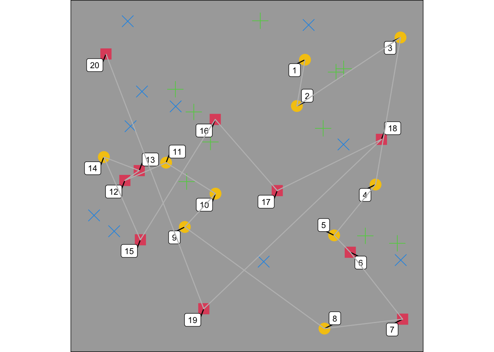
Setting the proximity bias to a small value (e.g. zero) will mean that there is no/little bias towards choosing a nearby target, as demonstrated below.
foraging_params$rho_delta <- 0
d <- sim_foraging_trial(trl = 1, stimuli_params, foraging_params)
plot_a_trial(d$stim, d$found)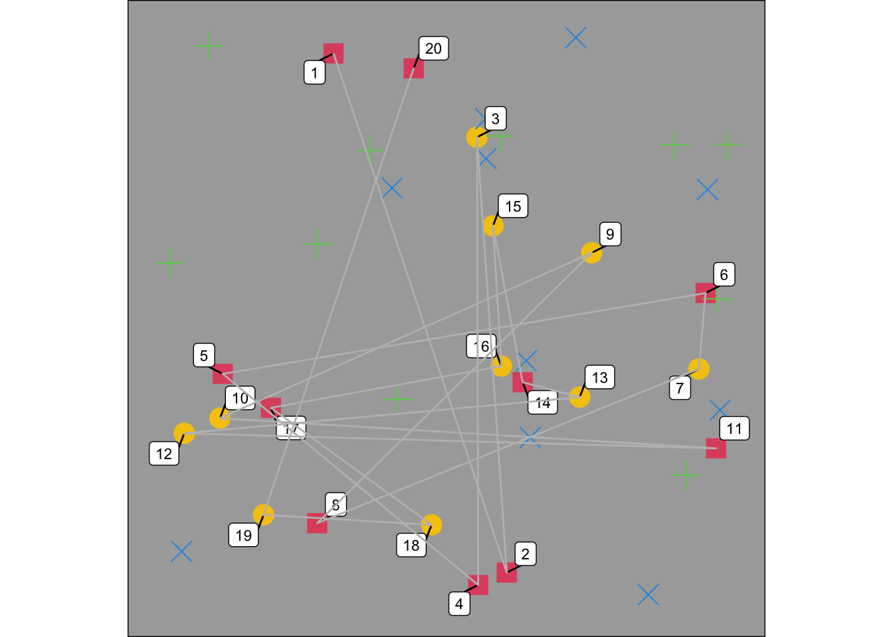
Relative Direction
Relative direction can be thought of as momentum, and is coded in the simulation as rho_psi. A positive value will give you forwards momentum, where a target in the same/similar direction is preferred, whereas a negative value will give you negative momentum, where a target in the opposite direction is preferred, giving a ‘zig zag’ trajectory.
Forward Momentum
For these examples, we have set the proximity bias to a ‘standard’ value. The relative direction below has been adjusted to give strong forward momentum - the simulated participant keeps going in the same direction for as long as they can.
foraging_params <- list(
b_a = 0,
b_s = 0,
rho_delta = 0.5,
rho_psi = 5)
d <- sim_foraging_trial(trl = 1, stimuli_params, foraging_params)
plot_a_trial(d$stim, d$found, "psi")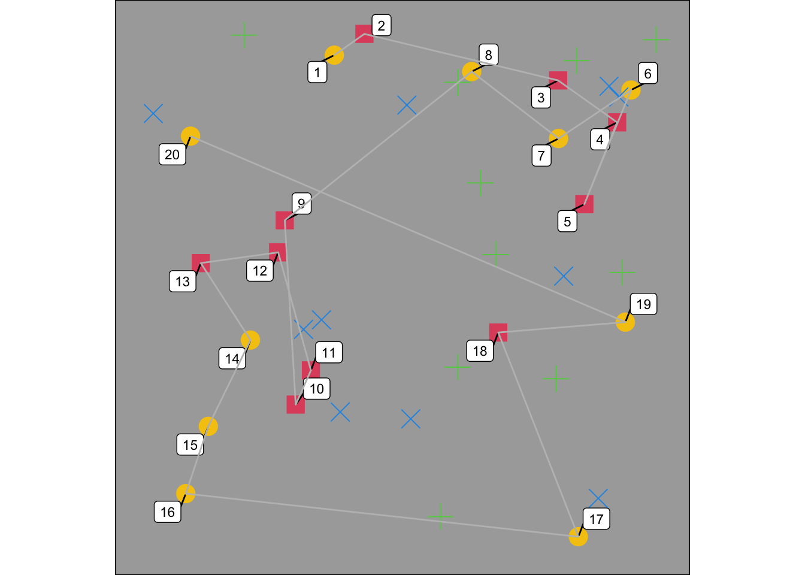
Negative Momentum
Below, the simulated participant has strong negative momentum: they have a much more ‘zig zag’ trajectory.
foraging_params <- list(
b_a = 0,
b_s = 0,
rho_delta = 0.5,
rho_psi = -5)
d <- sim_foraging_trial(trl = 1, stimuli_params, foraging_params)
plot_a_trial(d$stim, d$found, "psi")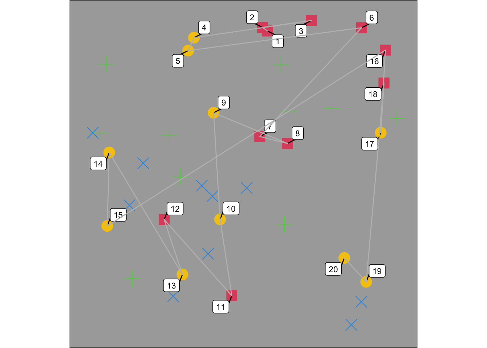
Absolute Direction
Absolute direction is the true direction of the next target selection: participants often seem to have biases for horizontal and vertical directions. It is coded in the simulation as abs_direction_tuning which takes an argument for kappa (\(\kappa\)) and theta (\(\theta\)).
We fix the mean (\(\mu\)) for each distribution (one for each cardinal direction). We then allow the \(\theta\) for each distribution to vary: so the \(\theta\) values for each distribution can be thought of as the probability that you are more likely to select that distribution compared to the other three possible ones (this value is standardised by the uniform distribution). \(\kappa\) is a measure of variance i.e. does the simulated person follow exactly the mean value (the cardinal direction) or is there variation around this.
The following graph shows some a simulated tuning curve where all four cardinal directions are equally likely to be picked.
abs_dir_tuning = list(kappa = rep(2, 4), theta = c(5, 5, 5, 5))
# plot absolute tuning curve
d <- tibble(phi = seq(1, 360),
z = compute_all_von_mises(phi=phi, abs_dir_tuning$theta, abs_dir_tuning$kappa))
ggplot(d, aes(phi, z)) + geom_path()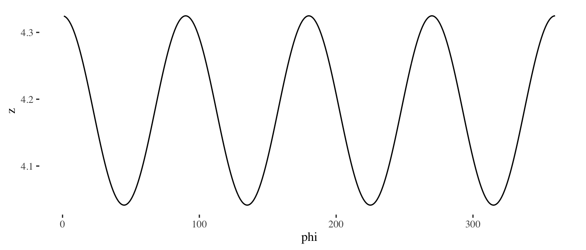
Set main foraging params to something pretty neutral:
foraging_params <- list(
b_a = 0,
b_s = 0,
rho_delta = 0.5,
rho_psi = 0)Horizontal Bias
Here, our simulation has a preference for moving horizontally (left and right). We have re-aligned the items on a grid with only one target type to make this easier to see.
items <- tibble(x = seq(0, 1, 0.2), y = x) %>%
modelr::data_grid(x,y ) %>%
mutate(item_class = 1, id = 1:n())
absdir_params = list(kappa = rep(5, 4), theta = c(10, 0, 10, 0))
d <- sim_foraging_trial(trl = 1, stimuli_params, foraging_params, absdir_params)
plot_a_trial(d$stim, d$found)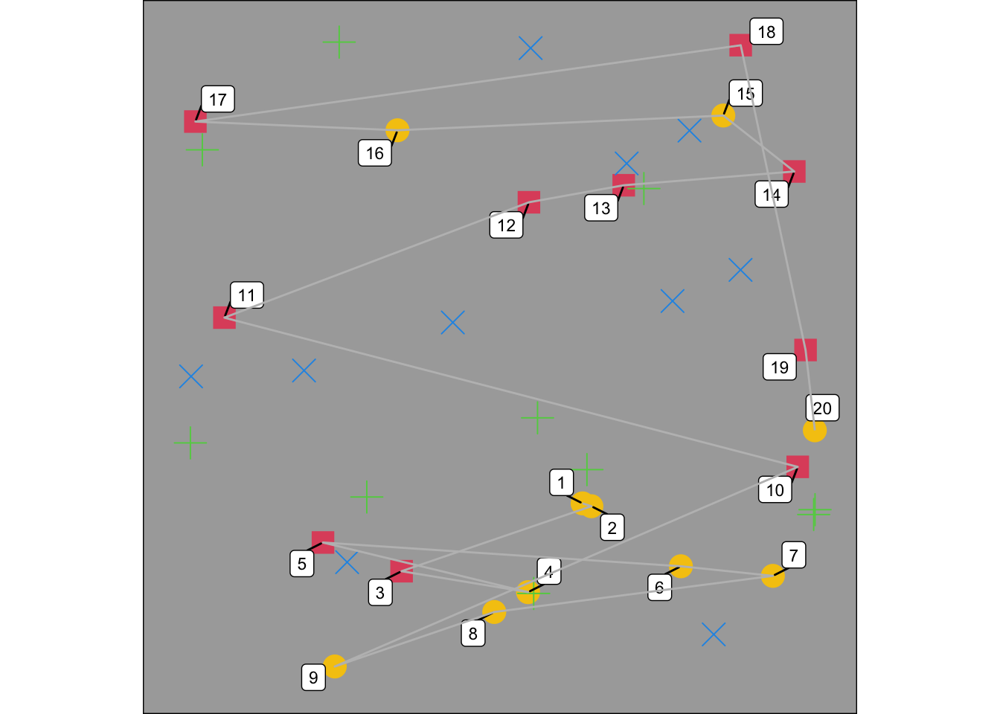
Vertical Bias
Here, the preference is for moving vertically (up and down).
absdir_params = list(kappa = rep(5, 4), theta = c(0, 10, 0, 10))
d <- sim_foraging_trial(trl = 1, stimuli_params, foraging_params, absdir_params)
plot_a_trial(d$stim, d$found)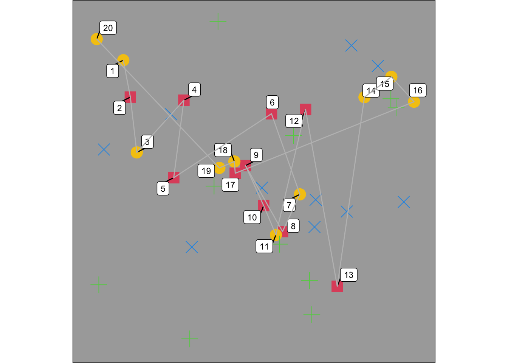
Right Bias
You can also set asymmetrical biases e.g. a rightwards bias (although note that this can lead to somewhat counterintuitive behaviour depending on the stimulus set up e.g. the simulation will pick the rightmost target early on, and then is forced to only move leftwards!)
absdir_params = list(kappa = rep(5, 4), theta = c(10, 0, 0, 0))
d <- sim_foraging_trial(trl = 1, stimuli_params, foraging_params, absdir_params)
plot_a_trial(d$stim, d$found)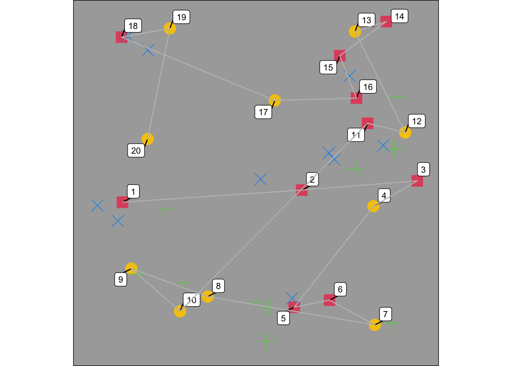
Run behaviour
Humans tend to forage in ‘runs’, sticking with the same target type. We can include this in the simulation using b_stick, where higher values give more run-like behaviour.
In the following demo, the other parameter values are set to plausible values to generate ‘human-like’ behaviour. This simulated participant has a medium preference to stick with the same target type.
Expected human-like run behaviour
absdir_params = list(kappa = rep(20, 4), theta = c(2, 0.5, 1, 0.5))
foraging_params <- list(
b_a = 0,
b_s = 3,
rho_delta = 0.5,
rho_psi = 0)
d <- sim_foraging_trial(trl = 1, stimuli_params, foraging_params, absdir_params)
plot_a_trial(d$stim, d$found)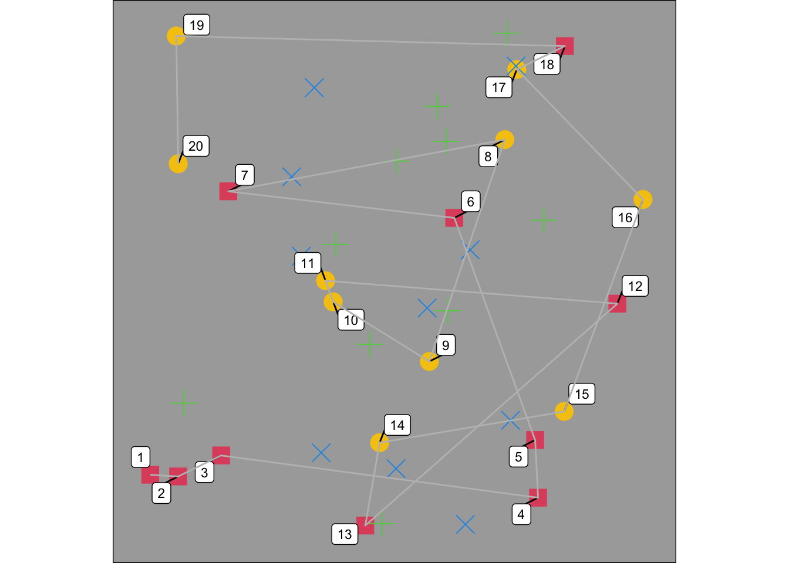
Simulating Multiple Trials
Now, we can move on to simulating multiple trials. The following example has one condition (labelled ‘test’). The number of trials per condition is determined by n_trials_per_cond.
A Condition (Block) of \(n\) trials
n_trials_per_cond <- 9
d <- sim_foraging_multiple_trials(person = 1,
n_trials_per_cond = n_trials_per_cond,
fp = foraging_params, sp = stimuli_params) Check Run Statistics
The code for computing run statistics is in the file compute_summary_statistics. This will calculate the maximum run length and number of runs for each trial of the condition.
source("../../functions/compute_summary_stats.R")
get_run_info_over_trials(d$found) %>% knitr::kable()| person | trial_p | condition | n_found | max_run_length | n_runs | best_r | pao |
|---|---|---|---|---|---|---|---|
| 1 | 1 | control | 20 | 8 | 5 | 0.42 | 54 |
| 1 | 2 | control | 20 | 9 | 4 | 0.89 | 25 |
| 1 | 3 | control | 20 | 10 | 3 | 0.09 | 90 |
| 1 | 4 | control | 20 | 10 | 3 | 0.35 | 46 |
| 1 | 5 | control | 20 | 8 | 4 | 0.51 | 67 |
| 1 | 6 | control | 20 | 5 | 6 | 0.45 | 35 |
| 1 | 7 | control | 20 | 6 | 5 | 0.43 | 42 |
| 1 | 8 | control | 20 | 10 | 3 | 0.47 | 74 |
| 1 | 9 | control | 20 | 6 | 7 | 0.49 | 61 |
We can plot a trial and manually check it to see if the run length statistics are correct.
plot_a_trial(d$stim, d$found, trial = 3)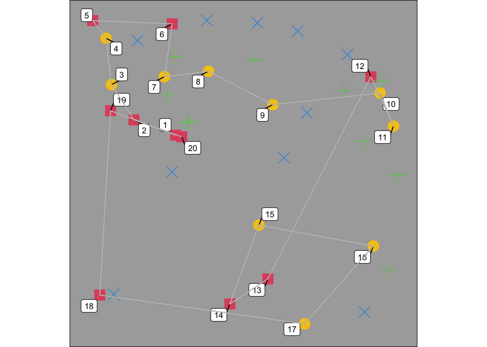
Simulate Multiple People & Conditions
Let us generate two conditions (A and B), and multiple participants (denoted by n_people).
Our simulation assumes zero correlation in the random effects. For now, we also assume no variation in absolute random directions (as this is a pain to code up).
experiment_params <- list(n_people = 20,
n_conditions = 2,
condition_labels = c("A", "B"),
n_trials_per_cond = 8)
stimuli_params <- list(n_item_class = 4,
n_item_per_class = c(10, 10, 10, 10),
item_labels = c("a", "b", "d1", "d2"))
foraging_params <- list(b_a = c(-1, 1),
b_s = c(2, 0),
rho_delta = c(0.5, 1.5),
rho_psi = c(-1, 1))
variance_params <- list(b_a = c(0.2, 0.1),
b_s = c(0.1, 0.1),
rho_delta = c(0.1, 0.1),
rho_psi = c(0.25, 0.25))
absdir_params <- "off"
initsel_params <- "off"
params <- list(e = experiment_params,
s = stimuli_params,
f = foraging_params,
v = variance_params,
a = absdir_params,
i = initsel_params)
d <- sim_foraging_people(params) Have we simulated people in line with parameters?
# create groundtruth tibble
params$f %>%
as_tibble() %>%
mutate(condition = params$e$condition_labels) %>%
pivot_longer(-condition, names_to = "parameter") -> groundtruth
d$dp %>%
pivot_longer(-c(person, condition), names_to = "parameter") %>%
ggplot(aes(value, fill = condition)) +
geom_histogram(alpha = 0.5) +
facet_wrap(~parameter) +
theme_bw() +
geom_vline(data = groundtruth,
aes(xintercept = value,
colour = condition), linetype = 2)`stat_bin()` using `bins = 30`. Pick better value with `binwidth`.Do people with a higher \(b_s\) have fewer runs?
We can again sense check our simulation: here, we can see that participants who have a stronger preference to forage in runs (i.e. a higher b_stick value) have a smaller number of runs. Note as well that condition B has a smaller b_stick value on average, leading to more runs.
get_run_info_over_trials(d$found) %>%
group_by(person, condition) %>%
summarise(median_n_runs = median(n_runs), .groups = "drop") %>%
full_join(d$dp) %>%
ggplot(aes(b_s, median_n_runs, colour = condition)) + geom_point(shape = 3, size = 5)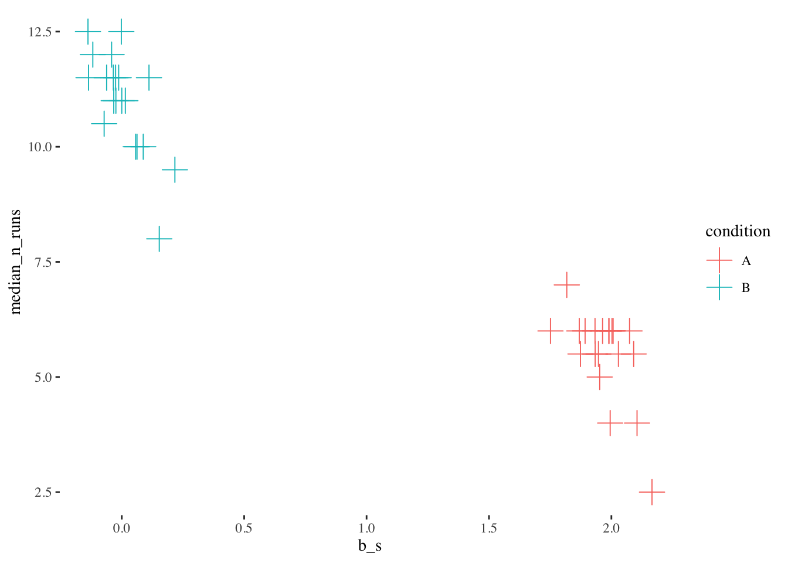
Compute inter-target directions
We have some processing code get_iisv_over_trials which allows visualisation of inter-target directions, by adding them into the plot. Going left is 180 degrees, down is -90 degrees, up is 90 degrees and going right is 0 degrees.
d_trials <- d$found %>% group_by(person, condition, trial_p) %>%
summarise(.groups = "drop")
d_sacc <- get_iisv_over_trials(d$found)
d_sacc %>% group_by(person, condition) %>%
summarise(d2 = mean(d2, na.rm = T)) %>%
full_join(d$dp) %>%
ggplot(aes(rho_delta, d2, colour = condition)) + geom_point()`summarise()` has grouped output by 'person'. You can override using the
`.groups` argument.
Joining with `by = join_by(person, condition)`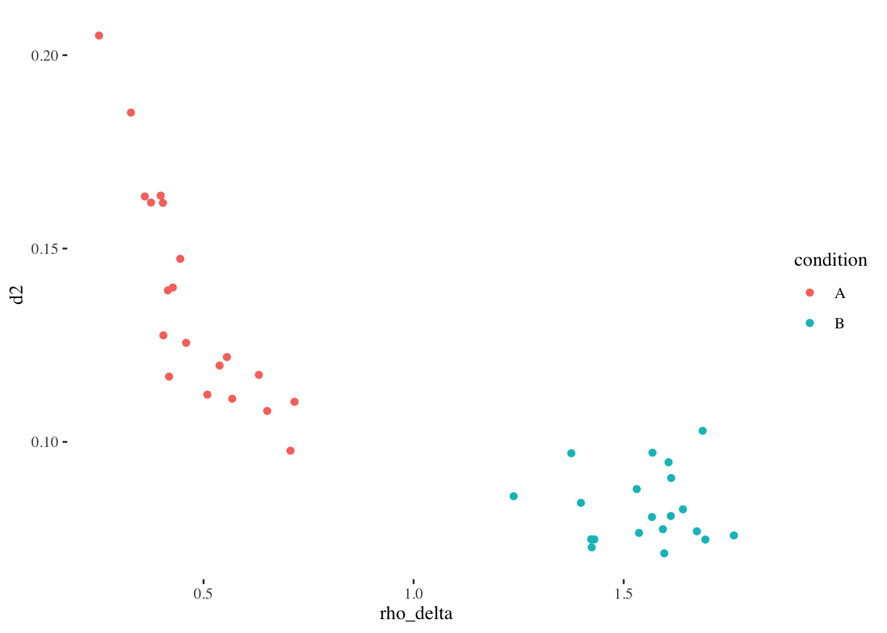
d_sacc$theta_deg <- round(180*d_sacc$theta/pi)
plot_a_trial(d$stim, d_sacc, trial = 1, segLabel = "theta_deg")